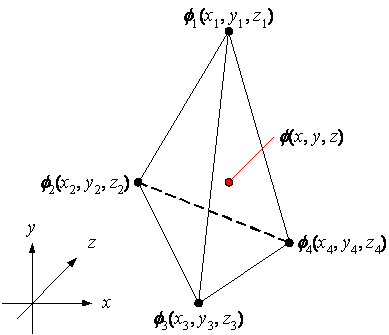
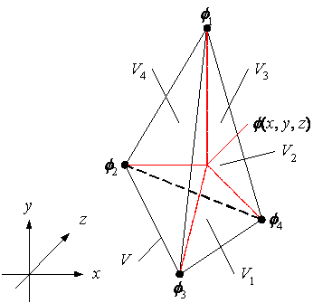
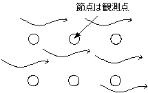

・有限要素法
有限要素法(Finite Element Method)では、節点といくつかの節点から構成される要素が用いられる。計算領域は、要素全体で表される。節点の物理量から各要素の物理量の積分値が計算される。積分値は行列式で表さる。全要素の行列式を組み合わせ、1つの大きな多元1次連立方程式を解くことで、速度などの変数が計算される。この行列式の計算は、タイムステップごとに計算される。タイムステップとは、総計算時間に対するユーザーが設定する微小時間である。
・節点、要素
要素にはいくつかの種類がある。
3角形要素
1次要素 2次要素
4角形要素
1次要素 2次要素
4面体要素
6面体要素
上図の様に各要素の節点には番号が割り振られる。割り振る順番は、反時計回りである。計算時には全節点に重複しない番号が割り振られるが、その番号とは異なる。
・形状関数
要素内の任意の点における物理量の計算には形状関数が使用される。形状関数は、要素ごとに異なる。また、各要素には1次要素、2次要素などの高次要素もある。ここでは、最も簡単な3角形1次要素の形状関数を導出する。
・3角形1次要素

上図の様にxy座標に1つの3角形要素を考える。1次要素の場合は、物理量fは次式となる。
ここで、a, b, gは未知数である。これら3つの未知数を3つの節点の物理量から計算する。
これを計算すると次式となる。
これを物理量fの式に代入すると次式が得られる。
ここで、L1, L2, L3[-]は形状関数と呼ばれ下図を用いて定義できる。
・3角形2次要素
次に3角形2次要素の場合は、物理量fは次式となる。
未知数は6個で、要素の6個の節点から6元1次方程式を解くことになる。
これを解くと次式が得られる。
・3角形要素の内挿関数
導出した3角形要素の形状関数を用いて内挿関数Niを次式で定義する。
3角形1次要素
3角形2次要素
また、
従って、3角形要素内の任意の位置の物理量は、内挿関数Niと節点の物理量f1, f2, f3で表される。
・4面体1次要素の形状関数
4面体1次要素の場合も同様に定義される。

上図の様にxyz座標に1つの4面体要素を考える。1次要素の場合は、物理量fは次式となる。
ここで、a, b, g, hは未知数である。これら4つの未知数を4つの節点の物理量から計算する。
この連立方程式の解を物理量fの式に代入すると次式が得られる。
ここで、L1, L2, L3[-]は形状関数と呼ばれ下図を用いて定義できる。

・4面体要素の内挿関数
導出した4面体要素の形状関数を用いて内挿関数Niを次式で定義する。
4面体1次要素
また、
従って、4面体要素内の任意の位置の物理量は、内挿関数Niと節点の物理量f1, f2, f3, f4で表される。
・高次要素
積分
・収支式のマトリックス化
数値計算の目的は、解析的に解けない収支式を四則演算に分解し、プログラム化して解くことである。有限要素法もその1つである。
・ガラーキン法
・重み付き残差法
上図の様なxy平面上に流れ場を考え、3角形1次要素を用意する。各節点の数値解には誤差が含まれる。その誤差e1, e2, e3を次式とする。
従って、要素内の任意の点で、誤差は次式となる。
要素内の誤差の積分値は次式となる。
・ヤコビアン行列
ヤコビアン行列は、座標変換のための行列である。高次要素の積分に使用される。
従って、
この2×2行列をx, y座標のヤコビアン行列と言う。
・離散化
・座標の取り方
・オイラー座標、ラグラジアン座標
数値計算では、タイムステップごとに節点の速度を計算していく。節点には、「観測点」という見方と「流体粒子」という見方があり、それぞれオイラー座標、ラグラジアン座標が用いられる。これらの座標の違いは、対流項(慣性力)を考慮するかしないかである。対流項は、全微分作用の項に含まれている。
・オイラー座標
節点を観測点と見なして計算する。対流項を考慮するため、節点は移動しない。逆に言えば、節点を固定するため、慣性力によって節点が押されると解釈できる。

・ラグラジアン座標
節点を流体粒子と見なして計算する。対流項を考慮しないため、節点は移動する。逆に言えば、慣性力によって節点が押されて移動するため、節点自体は慣性力を感じない(慣性力が蓄積しない)と解釈できる。節点の移動量は、タイムステップDt[s]×計算した速度v[m/s]となる。
座標の取り方には、オイラー座標とラグラジアン座標の2つがある。
・境界条件
・第1種
・壁面 滑り無し
・第2種
・表面張力
・勾配0
・陰解法、陽解法
・バンド幅の最適化
・行列計算
・ガウス
係数≠0
・コレスキー解